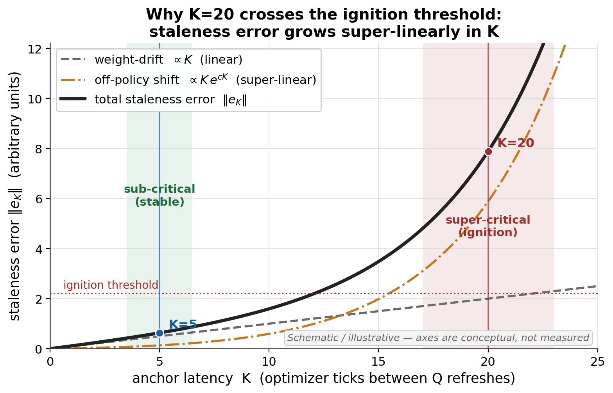
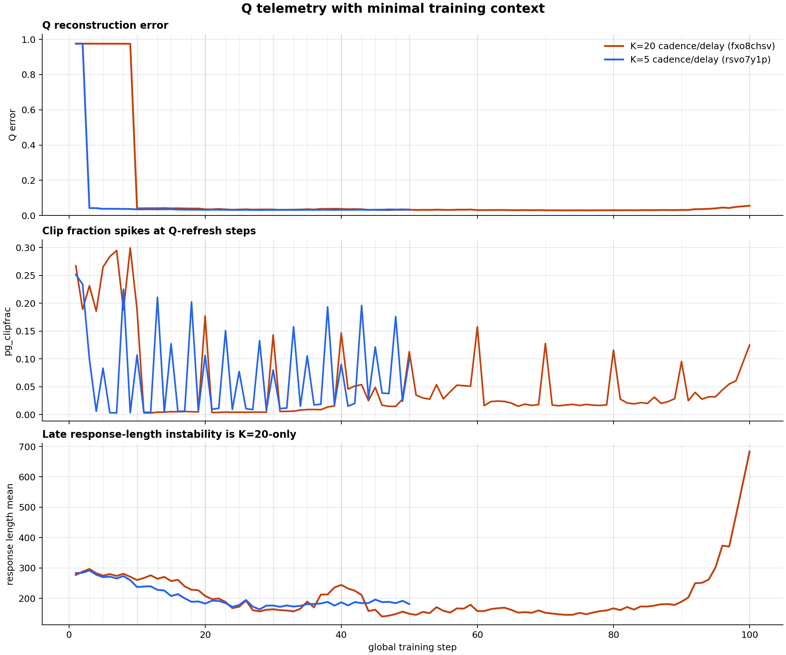

1. K increases staleness
The anchor computes M at old weights θt-K, then the live model applies it at θt. Larger K means more weight drift before the correction is used.
The short version: increasing K makes the anchor gradient older and less on-policy. That stale anchor signal can destabilize GRPO, while the PowerSGD Q basis still tracks the activation subspace well after its first real correction.
K hurts because it ages the learning signal, not because Q catastrophically fails. At K=20 the anchor gradient is computed from an older weight snapshot and data from an older policy. The merger then reuses that stale direction over a longer window, so small wrong-sign biases can accumulate into unstable behavior.
Q is different: it is a compression basis for activations. Once it gets its first anchor-owned update, its reconstruction error drops sharply and stays low enough that the late policy collapse is not a Q-basis collapse.
Shorter lag, fresher anchor gradient, Q refresh every 2.5 global steps.
About 4x older anchor signal, longer held correction window, late length spiral.
High at bootstrap, then ≈0.04 after the first Q update in both runs.
The anchor computes M at old weights θt-K, then the live model applies it at θt. Larger K means more weight drift before the correction is used.
GRPO data is policy-generated. A K-stale anchor sees samples from pi(theta_{t-K}), not the current pi(theta_t). The gradient is therefore for a shifted objective, and clipping can turn that shift into bias.
PowerSGD Q minimizes activation reconstruction error. It has no signal about answer quality, reward, KL, or length. So Q can stay healthy while the policy becomes worse.
M may point in the right dense subspace but the wrong current direction.

Bottom line: increasing K makes the anchor gradient older, more off-policy, and more dangerous to reuse. Q still does its compression job after the first correction, but PowerSGD Q cannot judge whether the learned policy is good.